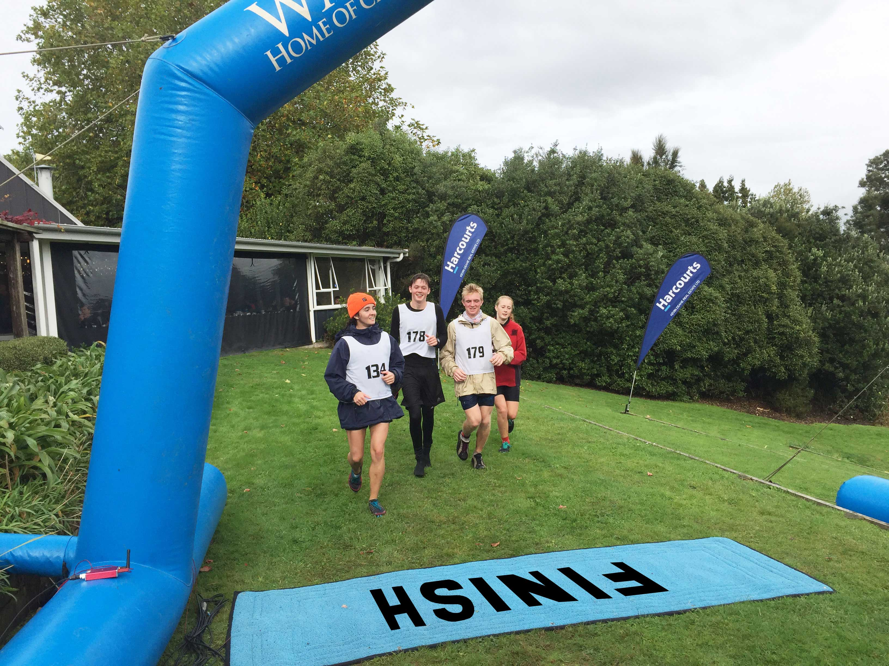
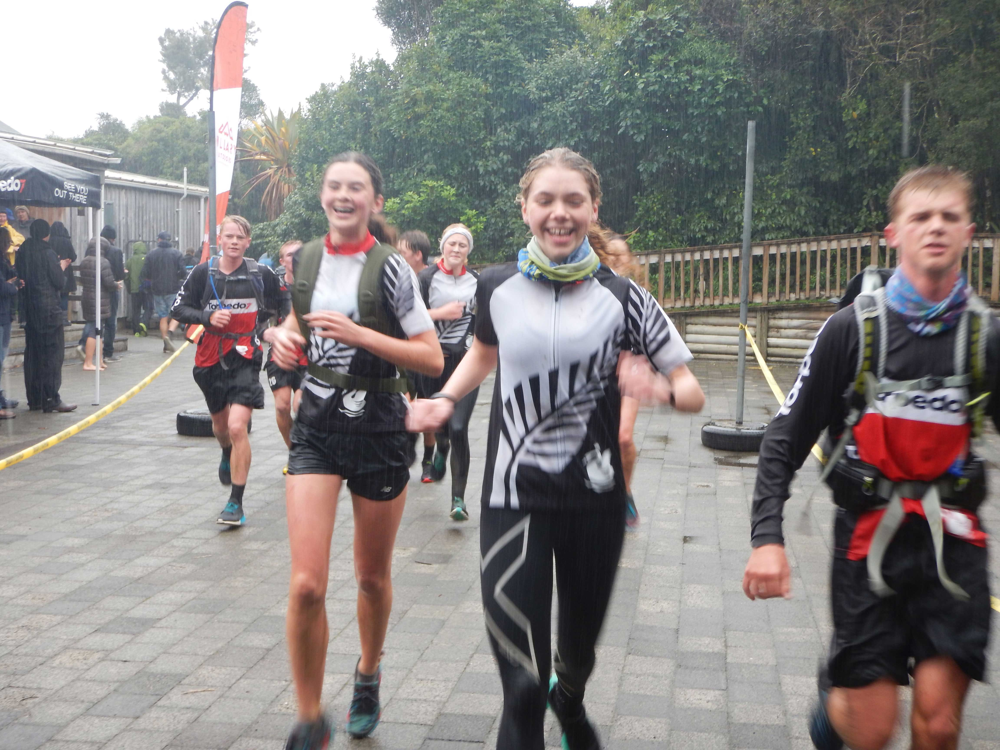

Running in Adventure Racing
Running is an absolutely key component of Adventure Racing. This is because throughout a race, you may be expected to run between transitions, in problem solving activities, and in rogaine sections.
Terrain
The terrain you will often run in consists mainly of offroad, potentially uneven ground. Some terrain may even require bush bashing depending on how far off track you are required to travel. Running in Adventure Racing also presents the possibility of deep river crossings and muddy conditions.
 Expectations
The main expectation of you when running in this sport is to be fit. Adventure Racing can require you to run for hours and hours on end. Therefore, you need to be able to cope with this expectation and have the ability to push on despite the challenge.
Tips
- Get yourself some decent trail shoes (a couple of good brands are Inov-8 and Salomon)
- Train with a backpack if you are preparing for a race where you will wear one (it is added weight)
- During a race, when you start to fade, consciously hold your core strong and do not let your body ‘flop’
- Utilise tow ropes to keep everyone together (have the fittest towing the weakest)